Overview
In version 2.8 and later, ProcessMaker offers an Audit Log which provides chronological records so that administrators can monitor the security of their ProcessMaker installation and view a history of the actions performed by users under the ADMIN menu, which includes the Settings, Plugins, Users and Logs tabs.
The records of the log can be used to check what actions users have executed in each tab under the ADMIN menu, when these actions were executed and from which IP address. The Audit Log currently shows a list with these details beside a brief description of the action. For example, if a PM Table was deleted:
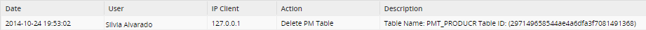
The Audit Log records all possible actions under the ADMIN menu, except accessing logs (e.g. the Events Log), some information windows (e.g. PHP Information), the actions of some additional plugins (e.g. FTP Monitor) and the changes inside the User Experience.
This feature is available with the acquisition of your Enterprise Edition license for ProcessMaker 2.8. To check if your instance has this feature installed, go to Admin > Plugins > Enterprise Manager and click on the Enterprise Features tab where it should be listed as installed and enabled.
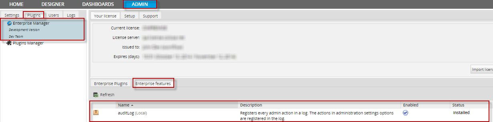
Enabling the Audit Log
In order to start logging users' actions, the Audit Log must first be enabled by going to ADMIN > Settings > Audit Log:
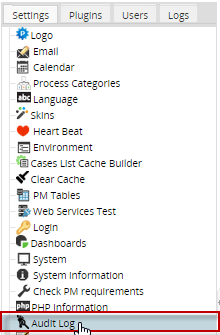
Click on the option Enable Audit Log to enable it and then click on Save Settings.
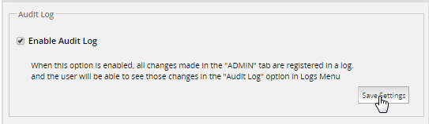
After saving the configuration, a message is displayed at the bottom of the page:
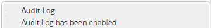
Disabling the Audit Log
If the Audit Log need to be disabled, go to ADMIN > Settings > Audit Log and uncheck the option Enable Audit Log. After saving, a message will be shown at the bottom of the page.
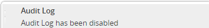
Accessing the Audit Log
Access the records in the Audit Log by going to ADMIN > Logs > Audit Log.
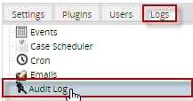
In the panel that opens on the right, all actions will be listed which were executed while the plugin was enabled:
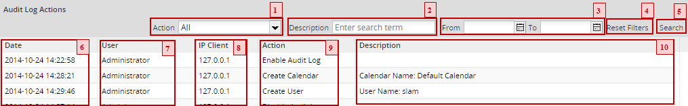
1. Action. Select a type of action to filter the Audit Log. To see all types of actions, select All.
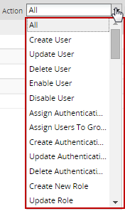
- The list immediately refreshes after selecting a filter of the actions.
2. Description. Enter a phrase to search for all log records which contain that phrase. After entering a phrase click on the Search button (5) button to show all matching records. Note that the search is case insensitive and will search in all columns in the Audit Log.
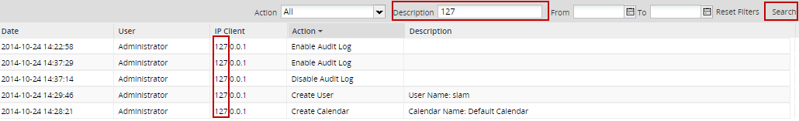
3. From - To. Use these two fields to filter the log records starting from a specified date to a specified date. See all records up to a specified date, enter a date in the To field, but leave the From field blank . To see all records after a specified date, enter a date in the From field but leave the To field blank. To remove the date filter, delete both the From and To dates. Then click on the Search button (5).
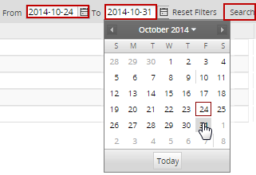
4. Reset Filters. Click on this button to clear the Description, From and To fields. Then click on the Search button (5) to refresh the list in the Audit Log.
5. Search. Click on this button to search the records log according the criteria set in the Description, From and To fields.
6. Date. Shows the date and time when the Action (9) was recorded in the format YYYY-MM-DD HH:MM:SS.
7. User. Lists the last and first name of the user who performed the recorded Action (9).
8. IP Client. Shows the IP address of the user who performed the action.
9. Action. Shows the type of action, which was performed in the ADMIN section in the Settings, Plugins, Users and Logs tabs.
10. Description. Shows a brief description of the action.
The columns Date, User, IP Client, Action and Description can be ordered alphabetically in ascending or descending order by clicking in the column header, which will show an arrow indicating the direction of the sort. To reverse the sort order, click on the header again.
Settings Actions
The Audit Log records the following actions executed under ADMIN > Settings:
| Logo | Calendars | Process Categories | |
|---|---|---|---|
| * Apply - Replace Logo * Upload Logo * Delete * Restore | * Update Email Settings * Create Email Settings | * Create - Copy Calendar * Update Calendar * Delete Calendar | * Create Category * Update Category * Delete Category |
| Languages | Skins | Heart Beat | Environment |
| * Upload Language * Export Language * Delete Language | * Create Skin * Import Skin * Export Skin * Delete Skin | * Enable Heart Beat * Disable Heart Beat | * Update Environment Settings |
| Cases List Cache Builder | Clear Cache | PM Tables | Web Services Test |
| * Build Cache | * Clear Cache | * Create PM Table * Update PM Table * Delete PM Table * Add Data in a PM Table * Update Data in a PM Table * Delete Data of a PM Table * Import Table * Export Table | No action is recorded in the log as it is just testing. |
| Login | Dashboard | System | System Information |
| * Update Login Settings | * Create Dashlet Instance * Update Dashlet Instance (include Deactivate and Activate) * Delete Dashlet Instance | * Upload System Settings | No action is recorded in the log since this is only an Information screen. |
| Check PM Requirements | PHP Information | Audit Log | Cases List |
| No action is recorded in the log since this is only a test. | No action is recorded in the log as this is only an Information screen. | * Enable Audit Log * Disable Audit Log | Set Columns |
Example
Create a new Process Category by going to Admin > Settings > Process Categories.
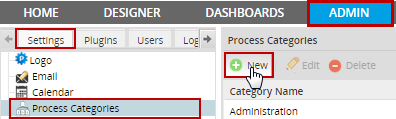
Create the category: "RRHH"
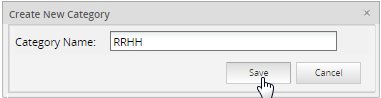
View the action recorded in the Audit Log by going to Admin > Logs > Audit Log:

The description for creating a new category inside the Audit Log is: "Create Category".
Plugins Actions
The Audit Log records the following actions under Admin > Plugins:
| Enterprise Manager | Plugins Manager |
|---|---|
| * Install Plugin * Enable Plugin * Disable Plugin | * Install Plugin * Enable Plugin * Disable Plugin |
Example
Disable a plugin by going to Admin > Plugins > Plugins Manager.
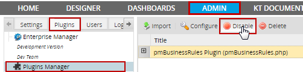
The action described for disabling a plugin inside the Audit Log is: "Disable Plugin".
sers Actions
The Audit Log records the following actions executed under Admin > Users:
| Users | Groups | Departments |
|---|---|---|
| * Create User * Update User * Delete User * Enable User * Disable User *Assign User to a Group * Authentication Source | * Create Group * Update Group * Delete Role * Assign Users to a Group | * Create Department * Create Sub Department * Update Department * Update Sub Department * Delete Department * Assign Manager to Department * Assign User to Department * Remove User from Department |
| Roles | Authentication Sources | User Experience |
| * Create Role * Update Role * Delete Role * Assign User to a Role * Delete User from a Role * Add Permission to a Role * Delete Permission of a Role | * Create Authentication Source * Update Authentication Source * Delete Authentication Source * Assign Authentication Source | The User Experience is not recorded in the log |
Example
Create a new user by going to Admin > Users > Users

Fill in information about the new user and save it.
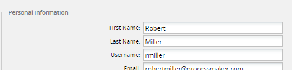
View the action recorded inside the Audit Log by going to Admin > Logs > Audit Log:
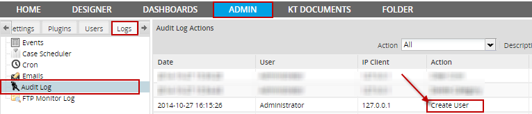
The action described for creating a new user inside the Audit Log is: "Create User".
Log actions
The Audit Log records the following actions under ADMIN > Logs
| Cron |
|---|
| * Clear Cron |
Note: The options: "Events", "Case Scheduler" and "Emails" are not recorded inside the log.
Example
Clear the Cron log inside Admin > Logs > Cron
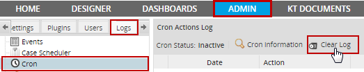
View the action registered inside the Audit Log by going to Admin > Logs > Audit Log:
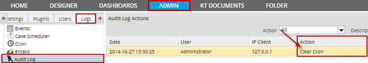
The description for this action when clearing the Cron is Clear Cron.